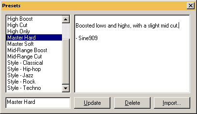

Presets are wonderful. They help recall great sounds and
effects you've come across throughout your daily slider tweaking. While
some will be content with many of the great presets included with Buzz,
many more will create many of their own. Follow the following instructions
to create your own presets in Aldrin.
|

Figure 3.13
|
|
Creating Presets
|
|
|
|
1. Open the Preset dialog by
Clicking
the Edit button
on any machine parameter dialog.
|
|
2. Name your preset by
typing a name in
the empty text area
in bottom left.
|
|
3.
Type any notes
about
the preset in the large text area on the right.
|
|
4.
Click the Add button
.
This is very important. If you do not click the Add button,
your preset will not be saved.
|
|
5. When you typed (or
selected) an existing name
in the name box, the 'Add' button will change into an 'Update'
button, as shown in figure 3.13.
|
|
As stated in point 5, updating presets
is accomplished
through the same means as creating one, yet rather then creating a name
(step 2 above), you simply
select an existing preset
from the list and click Update.